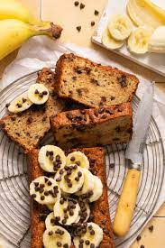

Banana Chocolate Chip Bread

This chocolate chip banana bread is super moist and tastes amazing!
Enjoy this chocolate chip banana bread for breakfast, as a snack, or for dessert. It's quick, easy, and the perfect way to use up extra bananas!
Ingredients
These are the ingredients you'll need to make this crowd-pleasing chocolate chip banana bread recipe:
- Flour: This chocolate chip banana bread starts with all-purpose flour.
- Leaveners: Baking soda and baking powder act as leaveners, which means they help the bread rise.
- Salt: A pinch of salt enhances the overall flavor of the chocolate chip banana bread, but it won't make it taste salty.
- Bananas: You'll need to mash three ripe bananas.
- Milk: A tablespoon of milk adds moisture.
- Cinnamon: Ground cinnamon lends welcome warmth.
- Sugar: This recipe calls for white sugar, but some Allrecipes community members like to use a blend of brown and white sugars.
- Eggs: Whole eggs keep the banana bread moist and help bind the batter together.
- Chocolate chips: Of course, you'll need chocolate chips!
Directions
You'll find the full, step-by-step recipe below — but here's a brief overview of what you can expect when you make chocolate chip banana bread at home:
1. Mix the dry ingredients in one bowl; the bananas, milk, and cinnamon in another bowl; and beat the butter and sugar in a third bowl, adding the eggs one at a time.
2. Stir the banana mixture into the butter mixture. Mix in the flour mixture. Fold in the chocolate chips.
3. Pour the batter into a prepared loaf pan and bake in the preheated oven until a toothpick comes out clean.